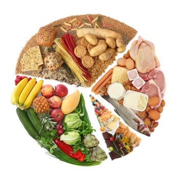
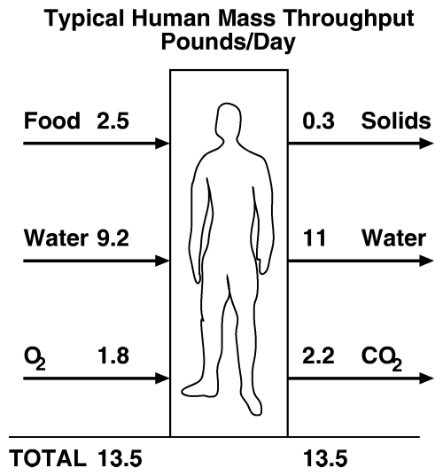
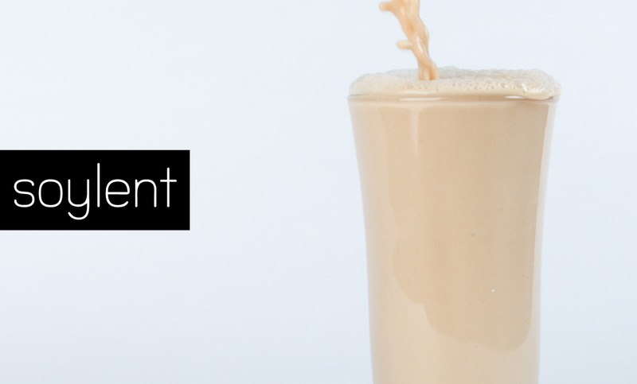
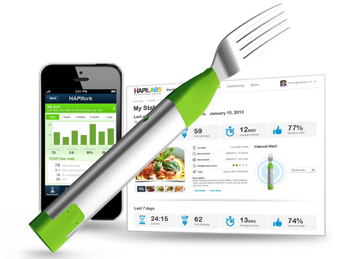
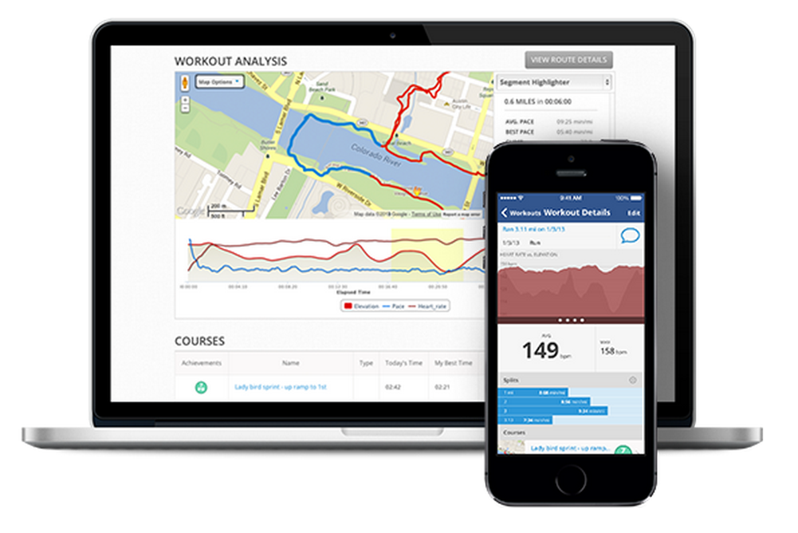
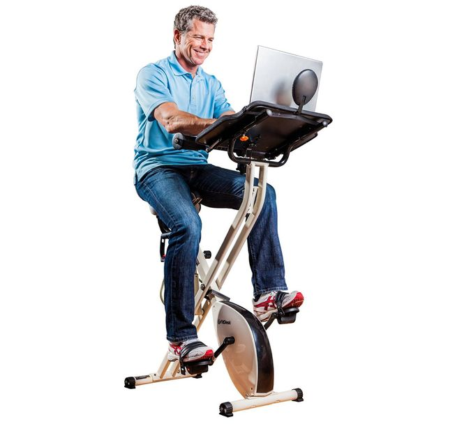
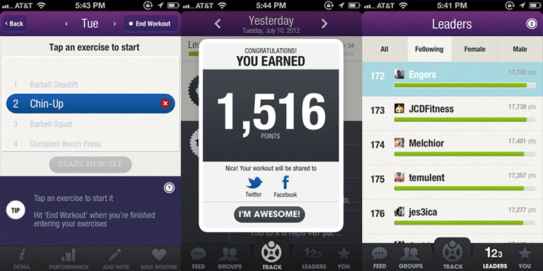
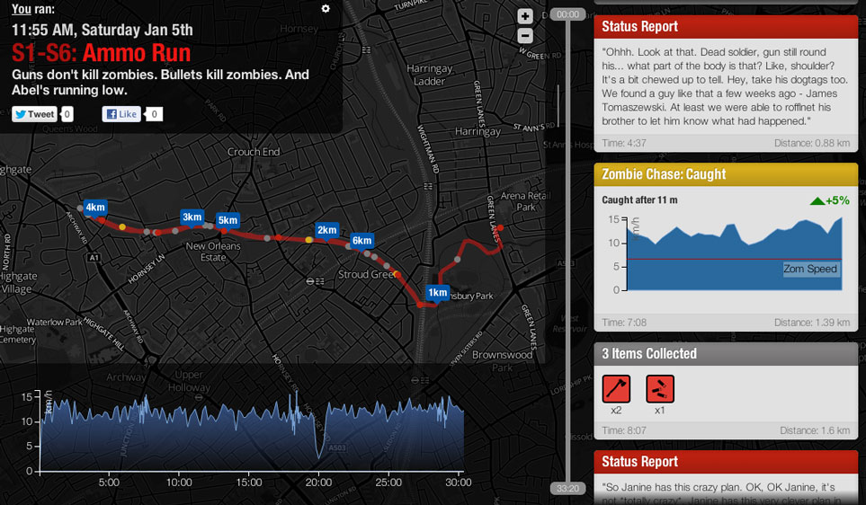

January 2014: Fitness for Geeks
News from the Bleeding Edge / Geek Fitness Roundup
— Brian Moeskau (@bmoeskau)
FitChimp Demo and Tech Talk
— Truong-An Thai, CEO (@bithai)
— Dr. Trung Nguyen, Chief Wellness Officer (@trungmanator)
— Patrick Hitchins, CMO (@hitchpat)
Sponsor: Hot Lava
hot lava obstacle course.com
Sponsor: O'Reilly Media
Fitness for Geeks
Geeks Need Fitness
(More than we think)
Typical Geek Lifestyle...
Eating Well
- Don't drink your calories
- Eat more fruits and veggies
- Eat smaller portions
- Minimize sugar and simple carbs
Eating well is simple. It's just not easy.

E-book written by John Walker, founder of Autodesk
Analytical strategies for planning meals, losing weight and keeping it off

Soylent
A nutritionally-complete meal in each drink
Raised over $2MM on CrowdTilt
Shipping in "Early 2014"

HAPIfork
Measures "fork servings per minute", serving interval, meal length
Gentle vibrations alert you if you are eating too fast
Has an app and web dashboard

FitStar
Personal trainer app for iPad (and TV via AirPlay)
Personalized workouts based on goals, time available
12 exercises deploying only body weight, a chair and a wall
It fulfills the latest mandates for high-intensity effort, which essentially
combines a long run and a visit to the weight room into about seven minutes of steady
discomfort — all of it based on science.

Scientific stufy performed in 2013
4 minutes of 90% effort cardio, 3 times/week, has same effect as 16 minute sessions
Geeks (Really) Love Gadgets
Austin Startup, IndieGoGo campaign NOW through Feb 6
Detects and tracks specific exercises like push ups
API, compatible with third party apps
Lumo Back
Posture and activity sensor
Coaches you throughout the day, vibrates when you slouch
Geeks Love Measuring Stuff
MapMyFitness
Austin startup, acquired by Under Armour in Nov
Social network, mapping and tracking of activity

FitDesk
Exercise while you work
For those who love taking things a bit too far

Designed by "fitness geeks" to make exercise fun and addictive
Challenges, duels, achievement badges, social sharing

Outrun zombies and complete missions on your way to getting fit

So, in review, geeks are...
Busy
Logical
Efficient
Gadget lovers
Measurers
Extremophiles
Game lovers
Figure out which qualities resonate...
←
→
/
#